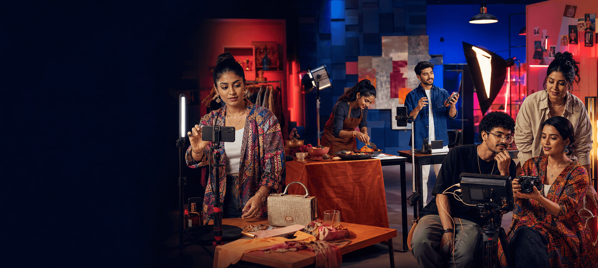
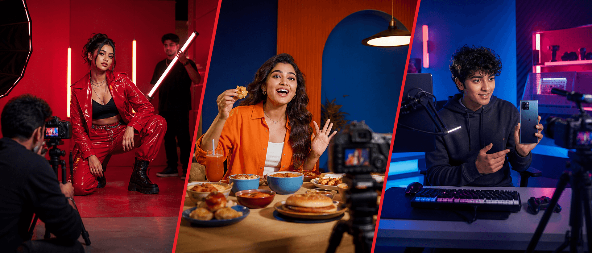

Big launch energy
Creator-led campaigns
A unifying campaign idea expressed through distinct creator voices, communities and content formats.
- Product launches
- Brand moments
- Integrated campaigns

MadlyTalented.
Creators · Influence · Campaigns
We connect brands with creators whose relevance, credibility and creative voice can turn a campaign into something audiences choose to watch and share.
A Madverse specialist company Discover → Co-create → Amplify
What we do
Influence is not a media slot. It is a relationship between a creator, a community and a point of view.
Madly Talented connects brands with creators who can carry an idea naturally. We combine audience intelligence, cultural understanding and hands-on campaign management to build partnerships that feel credible to communities and valuable to brands.
Choose creators whose audience, world and voice make sense for the brand and campaign.
Protect the campaign idea while giving creators enough ownership to make the content believable.
Build creator partnerships and content systems that can compound beyond one isolated deliverable.
The talent network
Every campaign needs a different mix of voices and craft. We curate the right creators and specialists around the idea—not a fixed roster around a follower count.
Community-first voices with cultural credibility.
Storytellers who turn creator ideas into watchable worlds.
Distinctive image-makers built for every format.
Sharp cultural thinking behind the content.
Visual voices that make campaigns recognisable.
On-camera talent who can hold attention naturally.
How we build creator campaigns
We manage the complete creator journey as one connected system—so strategy, talent, content and distribution strengthen the same idea.
We translate the business objective into an audience truth, a creator role and a clear reason for people to care.
We evaluate relevance, credibility, audience quality, content craft and brand safety—not reach in isolation.
The campaign idea stays consistent while every creator gets the freedom to express it in their own recognisable voice.
We coordinate publishing, partnerships, paid amplification and platform formats to build reach without losing authenticity.
We connect content performance with attention, engagement, action and learning for the next campaign cycle.
Creator work that feels native to the audience, distinctive to the brand and accountable to the business.
What we activate
From a single cultural moment to an always-on creator programme, every activation is shaped around the behaviour of the platform and the strength of the talent.
Big launch energy
A unifying campaign idea expressed through distinct creator voices, communities and content formats.
Trust at depth
Credible, repeat relationships that allow familiarity and brand meaning to compound over time.
Content at pace
A reliable flow of platform-native content mapped to the brand calendar and audience conversation.
A story worth following
Recurring formats with recognisable talent, a strong premise and room to build an audience.
Make influence work harder
High-performing creator work adapted and distributed across paid, owned and earned channels.
Built around the idea. Scaled around the opportunity.
Creator campaign worlds
Creator work should never feel copied from one category to another. The idea stays connected while the voice, visual language and platform behaviour change with the audience.

A hero creator moment supported by category voices, reactive content and paid amplification.
Campaign idea · Casting · Production · AmplificationCreators translate product benefits through formats their communities already choose to watch.
Creator strategy · Content system · Platform rolloutA flexible network producing useful, entertaining and timely content across the brand calendar.
Talent network · Monthly production · OptimisationDo not borrow a creator’s reach.
Build something their audience wants from them.
Impact, not noise
We define success before creators are cast. Every campaign gets a measurement framework built around the role influence needs to play for the brand.
Quality reach, view behaviour and the strength of the opening signal.
How actively the community responded, discussed, saved and shared.
Evidence that the creator strengthened relevance, consideration or trust.
The meaningful behaviours connected to the campaign and business objective.
The creator mix, the content pattern and the distribution plan—while the campaign is still moving.
Not the loudest campaign in the feed.
The one people carry forward.
The collective advantage
Madly Talented can work as a specialist partner or connect directly into the wider Madverse Collective. That means one creator idea can move through strategy, craft, production, distribution and performance without losing its shape.
Bring us into an existing campaign for talent strategy, casting, partnerships, content management or amplification.
Connect Madly Talented with the right Madverse specialists to build and deliver the campaign end to end.
Have a brand to grow, a
challenge to solve or
something worth building?